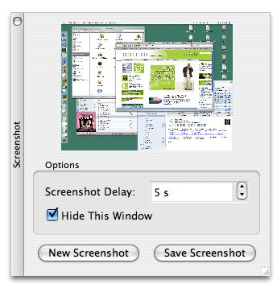

Interfacing with Native APIsQt's comprehensive API caters for most needs on all platforms, but in some circumstances, we may want to use the underlying platform-specific APIs. In this section, we will show how to use the native APIs for the different platforms supported by Qt to accomplish particular tasks. On every platform, QWidget provides a winId() function that returns the window ID or handle. QWidget also provides a static function called find() that returns the QWidget with a particular window ID. We can pass this ID to native API functions to achieve platform-specific effects. For example, the following code uses winId() to move the title bar of a tool window to the left using native Mac OS X functions:
#ifdef Q_WS_MAC
ChangeWindowAttributes(HIViewGetWindow(HIViewRef(toolWin.winId())),
kWindowSideTitlebarAttribute,
kWindowNoAttributes);
#endif
Figure 20.1. A Mac OS X tool window with the title bar on the side On X11, here's how we would modify a window property:
#ifdef Q_WS_X11
Atom atom = XInternAtom(QX11Info::display(), "MY_PROPERTY", False);
long data = 1;
XChangeProperty(QX11Info::display(), window->winId(), atom, atom,
32, PropModeReplace,
reinterpret_cast<uchar *>(&data), 1);
#endif
The #ifdef and #endif directives around the platform-specific code ensure that the application will still compile on other platforms. For a Windows-only application, here's an example of how we can use GDI calls to draw on a Qt widget:
void GdiControl::paintEvent(QPaintEvent * /* event */)
{
RECT rect;
GetClientRect(winId(), &rect);
HDC hdc = GetDC(winId());
FillRect(hdc, &rect, HBRUSH(COLOR_WINDOW + 1));
SetTextAlign(hdc, TA_CENTER | TA_BASELINE);
TextOutW(hdc, width() / 2, height() / 2, text.utf16(), text.size());
ReleaseDC(winId(), hdc);
}
For this to work, we must also reimplement QPaintDevice::paintEngine() to return a null pointer and set the Qt::WA_PaintOnScreen attribute in the widget's constructor. The next example shows how to combine QPainter and GDI calls in a paint event handler using QPaintEngine's getdC() and releaseDC() functions:
void MyWidget::paintEvent(QPaintEvent * /* event */)
{
QPainter painter(this);
painter.fillRect(rect().adjusted(20, 20, -20, -20), Qt::red);
#ifdef Q_WS_WIN
HDC hdc = painter.paintEngine()->getDC();
Rectangle(hdc, 40, 40, width() - 40, height() - 40);
painter.paintEngine()->releaseDC();
#endif
}
Mixing QPainter and GDI calls like this can sometimes lead to strange results, especially when QPainter calls occur after GDI calls, because QPainter makes some assumptions about the state of the underlying drawing layer. Qt defines one of the following four window system symbols: Q_WS_WIN, Q_WS_X11, Q_WS_MAC, and Q_WS_QWS (Qtopia). We must include at least one Qt header before we can use them in applications. Qt also provides preprocessor symbols to identify the operating system:
We can assume that at most one of these will be defined. For convenience, Qt also defines Q_OS_WIN when either Win32 or Win64 is detected, and Q_OS_UNIX when any Unix-based operating system (including Linux and Mac OS X) is detected. At run-time, we can check QSysInfo::WindowsVersion or QSysInfo:: MacintoshVersion to distinguish between different versions of Windows (2000, ME, etc.) or Mac OS X (10.2, 10.3, etc.). In addition to the operating system and window system macros, there is also a set of compiler macros. For example, Q_CC_MSVC is defined if the compiler is Microsoft Visual C++. These can be useful for working around compiler bugs. Several of Qt's GUI-related classes provide platform-specific functions that return low-level handles to the underlying object. These are listed in Figure 20.2. Figure 20.2. Platform-specific functions to access low-level handles
On X11, QPixmap::x11Info() and QWidget::x11Info() return a QX11Info object that provides various pointers or handles, such as display(), screen(), colormap(), and visual(). We can use these to set up an X11 graphics context on a QPixmap or QWidget, for example. Qt applications that need to interface with other toolkits or libraries frequently need to access the low-level events (XEvents on X11, MSGs on Windows, Eventref on Mac OS X, QWSEvents on Qtopia) before they are converted into QEvents. We can do this by subclassing QApplication and reimplementing the relevant platform-specific event filter, one of x11EventFilter(), winEventFilter(), macEventFilter(), and qwsEventFilter(). Alternatively, we can access the platform-specific events that are sent to a given QWidget by reimplementing one of x11Event(), winEvent(), macEvent(), and qwsEvent(). This can be useful for handling certain types of events that Qt normally ignores, such as joystick events. For more information about platform-specific issues, including how to deploy Qt applications on different platforms, see http://doc.trolltech.com/4.1/winsystem.html. | ||||||||||||||||||||||||||||||||||||||||||||||||||||||||